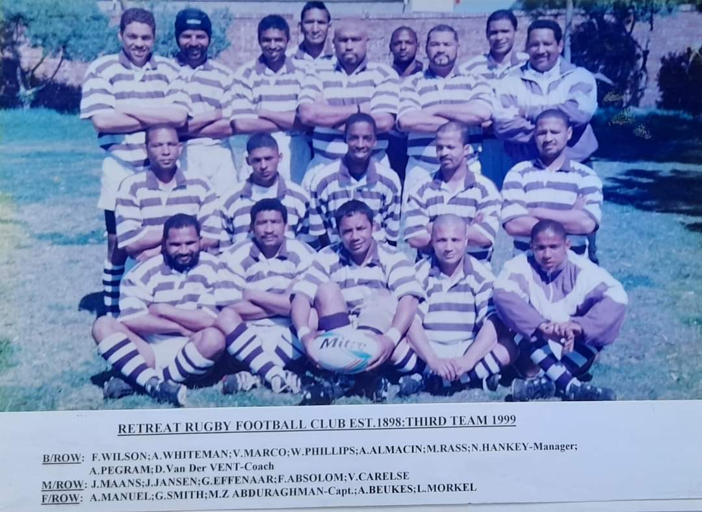

1898
The year 1898 saw the establishment of the club as a result of the amalgamation of the Lakeside and United Rugby clubs. The colours that were maroon and white, and the oak leaf and two acorns as the emblem.
The year 1898 saw the establishment of the club as a result of the amalgamation of the Lakeside and United Rugby clubs. The colours that were maroon and white, and the oak leaf and two acorns as the emblem.
The historic merger took place in the Dutch Reformed Church school hall near the site of the present Blue Route mall in Retreat. From 1898 to 1921 Retreat functioned as a social rugby playing club. The foundation families were the Collers, Asias, Kirstens, and Louws.

In 1922 the club affilated to the Mowbray based City and Suburban RFU and it qualified for admission to the First Division by beating Primrose, and in 1924 the club won its first major trophy, the Commando Cup.
Sometime in the 1920's the famous purple and white colours were adopted, and in the post-war period the emblem, the gun, reminiscent of the First British Occupation of the Cape (1795), and the ensuing retreat of the Dutch forces facing the approach of the Red Coats along the route late known as Military Road.

In 1936 Retreat lost its Kalk bay - based players who had defected to Thistle RFC.
The years 1936 to 1951 were the first golden era of the club, when every major throphy in all divisions were won at least once, under the leadership of Pete Messias and the great Sam Applis. In 1950 the club won the coveted Commando and Diamond Trophies.


The club was strengthened by the influx of student teachers from Battswood Training School in Wynberg, teachers from local schools and soldiers and their colleagues who had returned of from World War II, in 1945
The club was regionally based in the cubirb of its name, and was nurtured by the extended families of the Collers, Petersens, Van Reenens, Arendses, Jafthas, Pages, Mampies, Van Diemans, and many others. It proved to be the breeding ground of many a board player and captain of City and Suburban RFU, as well as administrators.

The club experienced a lean and difficult period in the late 50's and early 60's, but a dedicated band of players and officials stick to their guns. Their loayalty and dedication were rewarded in 1968 when Retreat emerged as Shield and Knockout winners.
The 1980's and 1990's saw the seconf golden period of the club when all senior teams won every major trophy at City Park more than once.
The Purple and White also represented City and Suburban twice in the National City and Suburban Top 8 Club Competition. But one of the highlights in the club's history was undoubtedly in 1983.
Since rugby unity in the Western Cape (1992), and up to its centenary in 1998, the club has flourished under the leadership of dedicated long-serving administrators and members.
In 1992 Retreat was drawn into WPRFU's Group 4B competition, but steadily gained promotion since, and are at present playing in the Premier B Division.